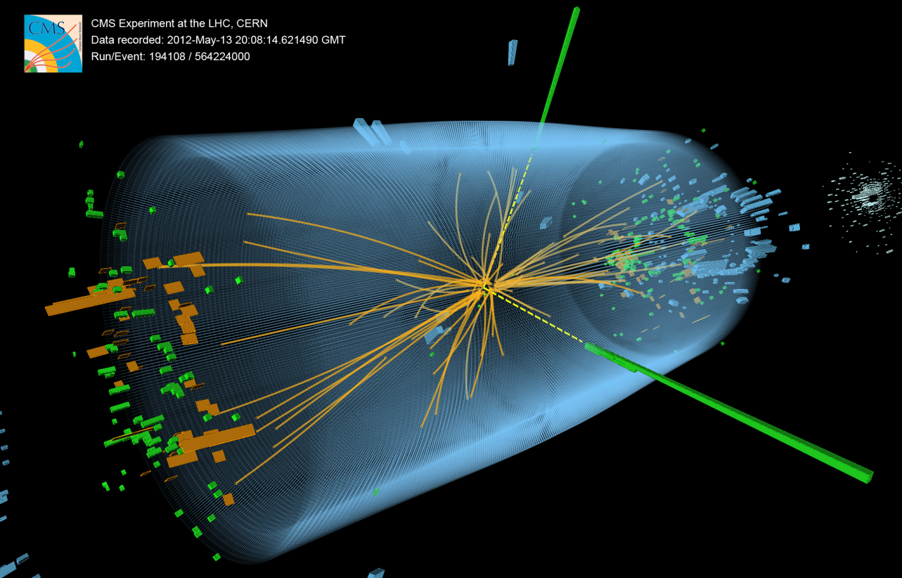
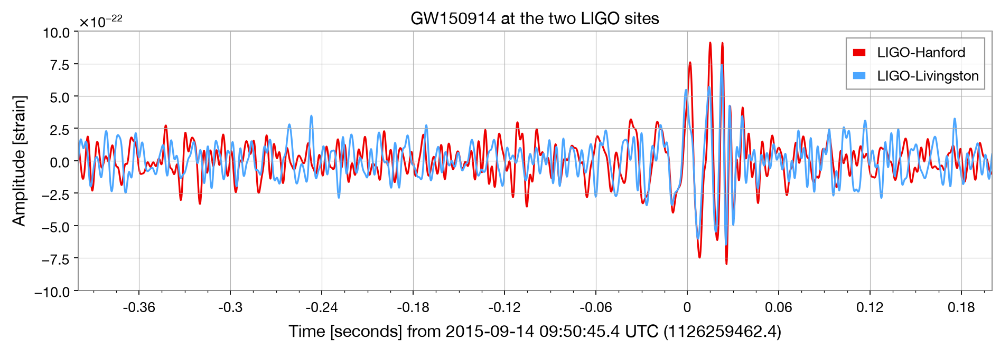

אנחנו משתמשים בקוד כדי להפוך את ההנמקה הפיזיקלית לניתנת לשחזור—not כדי להחליף אותה.
כאן מודל ברזולוציית עננים עוקב אחר מי העננים והגשם כשהם מתפתחים באטמוספרה. שיטות נומריות מקדמות בזמן משוואות מצומדות של זרימה ומיקרופיזיקה ברשת תלת־ממדית.
סימולציית נפח הגשם של CellularLES. נתחיל במודלים קטנים יותר ונבנה בהדרגה את ההרגלים הדרושים להבנת חישובים בקנה מידה כזה.

שני פוטונים מותירים אותות משוחזרים בגלאי. האנרגיות והכיוונים שלהם נותנים לפיסיקאים את המסה האינווריאנטית של הזוג.
קשר המסה נובע משימור ארבעת־התנע; שחזור נומרי מפיק את תכונות הפוטונים מאותות הגלאי. בהתנגשויות רבות התפלגות המסות הראתה עודף סביב מסת בוזון היגס.
תמונה: CMS/CERN, אירוע שנבחר בחיפוש אחר היגס בערוץ שני הפוטונים.
האם המתח והזרם נמצאים בקשר לינארי? איזו התנגדות הנתונים תומכים בה?
כיצד התנגדות האוויר מסיטה את מסלול הקליע מן הפרבולה האידיאלית?
נתחיל מטבלה שסופקה לנו, מגרף ומהתאמה של קו ישר. אותו מעגל עבודה—מודל, חישוב והשוואה—יוביל אותנו מן הדוגמאות הראשונות לבעיות מדעיות גדולות יותר.
סימון מתמטי קריא, עבודה אינטראקטיבית וספריות נומריות יעילות תומכים בליבת הקורס.
מערכת אקולוגית מדעית רחבה הופכת אותה לשפה חשובה להעברה. מודלים, בדיקות והרגלי נתונים עוברים בין שפות.
במודל דינמי לינארי xn+1 = A xn + B un הקוד ב־Julia כמעט זהה למשוואה. הווקטורים x, u, y והמטריצות A, B, C נשמרים כפי שהם.
x_next = A * x + B * u
y = C * xהשוואת כל שורת קוד לצעד במשוואה עוזרת לאתר טעות בסימן, באינדקס או בממדים.
זו תצוגה מסופקת, לא שיעור: טרם לימדנו את תחביר Python, והקוד הזה אינו נבחן. dropna מסירה שורות עם ערכים חסרים, ** 2 מעלה בריבוע איבר-איבר, ו־np.polyfit(..., 1) מתאימה ישר.
clean = data.dropna(subset=["time_s", "position_m"])
clean["time_squared"] = clean["time_s"] ** 2
fit = np.polyfit(clean["time_squared"], clean["position_m"], 1)
gravity = 2 * fit[0]הורידו Julia 1.12.6 מ־julialang.org/downloads עבור מערכת ההפעלה שלכם.
פתחו את Julia והריצו VERSION; התוצאה צריכה להיות v"1.12.6".
התקינו VS Code ואת הרחבת Julia; בחרו את קובץ ההרצה של Julia אם ההרחבה אינה מוצאת אותו.
בקובץ Julia הריצו println(2 + 3). שמרו, הריצו, ואתרו תוצאה מוצגת ופלט מסוף. בבקשת עזרה צרפו את הודעת השגיאה המדויקת.
מריצים מתיקיית השורש של המאגר. ההרצה הראשונה מורידה חבילות מתועדות; בעבודת הקורס אין להשתמש ב־Pkg.add או Pkg.update.
julia --versionjulia version 1.12.6julia --project=. -e 'using Pkg; Pkg.instantiate()'julia --project=. verify_environment.jlCourse Julia environment verified.נריץ מתיקיית אב שבחרנו. Git יוצר את תיקיית הקורס המקומית; משם מריצים את פקודות הסביבה ופותחים ב־VS Code. אם אין Git, נשתמש ב־Code → Download ZIP ונחלץ את הארכיון.
git clone https://github.com/nshaviv/physprog.git
cd physprogfrom gwosc.datasets import event_gps
from gwpy.timeseries import TimeSeries
from gwpy.signal import filter_design
t0 = event_gps("GW150914")
h = TimeSeries.fetch_open_data("H1", t0-16, t0+16)
l = TimeSeries.fetch_open_data("L1", t0-16, t0+16)
bp = filter_design.bandpass(50, 250, h.sample_rate)
ns = [filter_design.notch(f, h.sample_rate)
for f in (60, 120, 180)]
zpk = filter_design.concatenate_zpks(bp, *ns)
hf = h.filter(zpk, filtfilt=True)
lf = l.filter(zpk, filtfilt=True)
lf.shift("6.9ms"); lf *= -1נשווה בין t0 - 0.4 לבין t0 + 0.2. שחזור: graphics/generate_gwpy_example.py.

בכל סדרה 131,072 דגימות בקצב 4,096 הרץ במשך 32 שניות. התאמה לאחר תיקון ההשהיה המתועדת של 6.9 מילישניות והכיוון היא ראיה משני גלאים עצמאיים; סינון והתאמה חזותית לבדם אינם מוכיחים גילוי. מקור: GWOSC, ברישיון CC BY 4.0.
תצפיות מאדים ההיסטוריות של טיכו בראהה אינן קואורדינטות מוכנות. נלמד תכנות, גאומטריה, שיטות נומריות, התאמה ותרשום כדי להשוות מודל מעגלי ואליפטי מול דקלינציה נצפית.
הבא: זרימת עבודה מודרכת נתונים → התאמה → שאריות → איור בחוק אוהם.